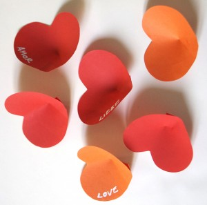
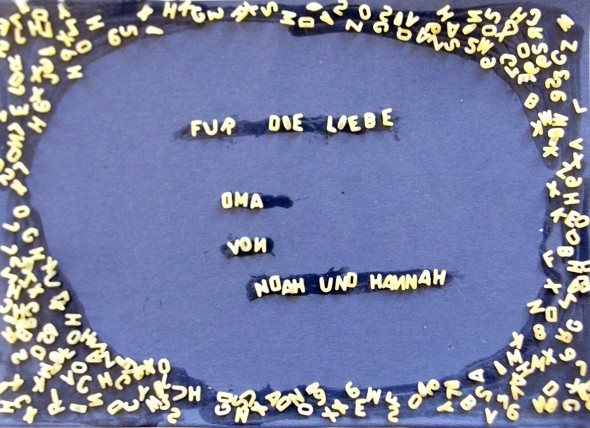

Feliz día de la madre (España hoy)


Feliz día de la madre (España hoy)


Bloques de hielo Partimos los envases de tetra pack por la mitad y los llenamos con agua. Aveces teñimos el agua con colorante alimentario. Después los…
Leer más →


Para el día de San Valentín nuestras magdalenas llevan corazones de fieltro!
Leer más →